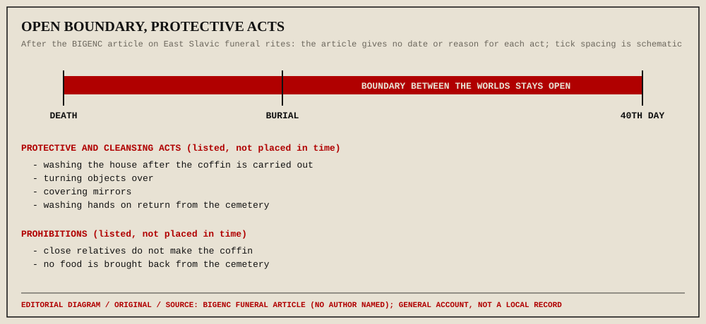
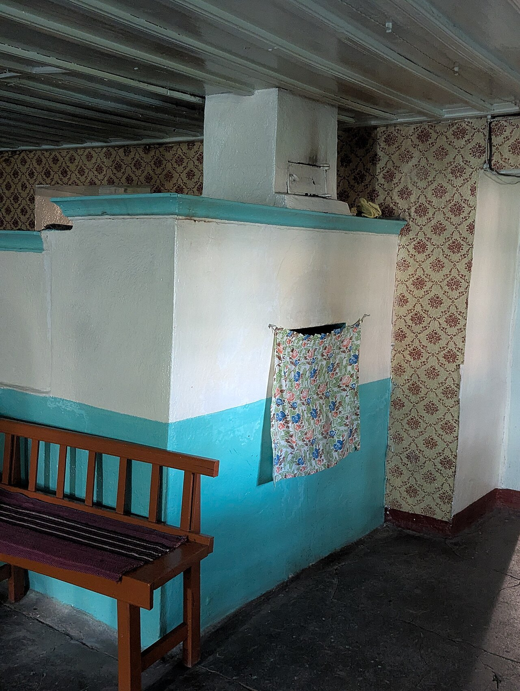

VOL. III · PLATE V · 04 / 04
TABOO, OMEN AND PROTECTION
Covered mirrors, thrown-out water and the reasons attached to them
What sources report people did in a house of mourning, which reasons are on record for each act, and where the reports do not agree. No customs are offered as rules.
Customs reported from earlier ethnography; fieldwork 2018–2019 · East Slavic villages; Russian North; Khislavichi district, Smolensk region · Russian funeral custom and its protective and cleansing acts
V / 01
Two aims, and the acts that serve them
An encyclopedia article on East Slavic funeral rites says the rite works in two directions: some acts help the dead reach the other world, others protect the living from the dead. Its protective and cleansing acts include washing the house after the coffin is carried out, turning objects over, covering mirrors and washing hands on returning from the cemetery. Its prohibitions include close relatives making the coffin and bringing food back from the cemetery.
The explanation the article gives is general: the dead can harm the living, and the boundary between worlds stays open from the death until the burial and the fortieth day. It does not give a reason for each separate act, and it does not date its examples. The page does not name an author. The page has no bibliography, but it names its authorities in the text: Baiburin (1993), Razumova (2012), Tolstaya (2009, 2019), Spassky (1877) and an 1890 collection of materials on daily life. Washing as removal of the marks of the living is attributed to Baiburin; the epistolary character of laments in the Russian North to Tolstaya.
Barsov (1872, p. 312) lists acts done so as not to fear the dead: touching the dead man’s heels, kissing him hard at the farewell, looking at the legs of the horse that carries him from under the shafts on the way to the cemetery, touching the house stove with the fingers on returning, and, if he still disturbs the living with apparitions, driving him off with a bridle on the Svir. He gives them as known customs from different places, not as one rite, and attaches no reason to any act beyond the stated aim. He adds that when someone dies without repentance, his relatives bow at the feet of everyone who comes to church, and sometimes of anyone they meet within two or three weeks, asking forgiveness of the dead person’s sins, in the belief that the sins pass to the living who take part in the singing or are bowed to; and that some Kargopol parishes have no custom of commemoration at all, with a saying that one does not stir a dead bone.
V / 03
Washing
Washing the body appears in both sources as an obligatory part of the rite. The encyclopedia cites a scholar who argues that the strictness of the rule points to a purpose beyond cleaning: removing what marked the person as living. In the Russian North, it says, the washing was done by specially invited people, usually women past childbearing age.
In the Khislavichi district of Smolensk, A. Ryko’s informants said neighbours were invited to wash, women washing women and men washing men, and she found no stated ban on relatives taking part. The encyclopedia’s prohibition concerns making the coffin, not washing; Ryko’s article names no ban on relatives for washing, and says that excluding close relatives would fit the general boundary function of washing, as a wider pattern and not as a rule recorded locally. The two sources describe different places and cannot be added together.
V / 04
A 1927 survey: what was done in the house
Zelenin’s survey of East Slavic ethnography (1927), § 132, lists the acts around a death. At the moment of death a vessel of water was set beside the dying person; many said they had seen the water stir, as if from the bathing of the soul that had just left. It stood on the table or windowsill for forty days, and people held that during that time the soul had not yet gone to the other world, and some that it drank the water. At the same moment the stove flues or a small window were opened and a cloth or towel hung out of the window. People explained the cloth in different ways: the soul dries itself on it, wipes its tears with it, or rests on it. Zelenin suggests it first eased the soul’s way out of the house and back. A long death agony was put down to dealings with unclean power, and then the roof ridge was broken or a ceiling board lifted so that the soul could leave. Copper coins were laid on the eyes so that the dead should not look at a member of the family, who would then die. The bed on which someone had died was thrown out or put in the hen house for the cock to cleanse.
When the coffin was brought in, everyone left the house, pregnant women above all; they also left when it was carried out and were not to wash the body, or their child would die. In Olonets province, he writes, citing Barsov, the coffin went out through the window so that the dead could not find the way back; it was carried feet first and struck three times on the threshold so that the dead would take leave of the old home. Water standing in the house at the moment of death was poured out, because the dead might have drunk it. A woman followed the procession with a bath broom, sweeping the floor to the threshold and sprinkling water, and the floor was then washed. Zelenin reads this as magic, not hygiene, and gives the informants’ wording: the water is poured ‘to wash away the dead man’s traces’. While the body lay in the house the floor was not swept, ‘so as not to sweep out the living’; afterwards the rubbish was swept toward the house, so that its people would stay. Rye and barley were thrown behind the procession and on the coffin ‘so that no one in the house dies again’. An axe or knife was struck on the bench where the dead had lain, ‘to cut off death’. Bread was not baked while the body was in the house, and no sowing or planting was allowed in the village until the burial, or the crops would not come up.
Zelenin merges Russian, Ukrainian and Belarusian material, and I have kept to the items he gives for Russians or the Russian North or leaves general. His details come from the archive of the Russian Geographical Society and from regional collectors, cited by volume and number; the archive files were not seen. He gives no dates. The passages read do not mention covering mirrors, so the mirror material on this plate rests on the three other sources.
V / 05
Done without an explanation
Ryko writes that people in the borderland often perform funeral actions without being able to say what they are for, and that as the motives fade the sense of obligation fades with them. This is her observation of one district, based on informants’ memories, and she says it is unclear whether the trend is local.
It matters here because the reasons attached to protective acts in the other sources are the reasons collected from or ascribed to people at particular times. They are not a fixed meaning that every act always carried.
V / 06
Why the mirror?
Several reasons are on record for covering mirrors. A hieromonk, writing against the custom, reports that people said the soul should not be frightened by its reflection, or the dead should not frighten the family, or the soul might slip into the world behind the mirror, which he says the devil rules. Rouhier-Willoughby, reporting earlier ethnographers, gives the reason that the soul should not be trapped, and ties mirrors to water, which was also thrown out because it could trap the soul.
These do not agree with each other and none is shown here to be the original. The church writer is hostile and gives the folk reasons in order to dismiss them. The atlas lists the reasons and leaves the meaning of the act unsettled.
Ethnolinguistic field evidence gathered across Russian provinces (Tolstaya 1999, pp. 321–324) documents the underlying structural logic of covering mirrors. In peasant worldview, the mirror is an active, permeable boundary between this world and the otherworld. The primary fear recorded among informants is the 'doubling' of death (udvoenie smerti): if the corpse or any living household member is reflected, death will inevitably strike a second person in the home. Secondarily, the unquiet soul, wandering about the house during the initial forty days, is thought vulnerable to entrapment inside the glass matrix, unable to cross over. Looking into an uncovered mirror while a corpse remains in the house was subject to an absolute taboo, threatening sickness or immediate death.
V / 07
The Church’s position
Hieromonk Dometian calls the covering of mirrors a folk custom with nothing in common with the Orthodox burial rite, and he says the same of overturning tables and chairs, which he calls pagan survivals. He also reports a belief that one must not look out of a window at a funeral procession, and he tells believers to take the blessing of a priest as their only guide.
This is a polemical text of unstated date. It shows what the Church objects to, and by implication what was practised, but it is not a count of practice.
V / 08
Act, reason and who says so
| Act | Reason given | Source and status |
|---|---|---|
| Covering mirrors | Preventing the 'doubling' of death (second death in house if corpse or living reflects); mirror as open portal; soul entrapment (Tolstaya 1999, pp. 321–324) | Tolstaya 1999; Dometian; Rouhier-Willoughby; documented field rule |
| Throwing out water | Water could trap the soul; mirrors seen as like water | Rouhier-Willoughby; second hand |
| Turning tables and benches over | So that death enters the soil | Rouhier-Willoughby, citing earlier work |
| Washing the house after the coffin leaves | Protects the living from the dead | Encyclopedia article; no individual reason given |
| Washing hands after the cemetery | Protects the living from the dead | Encyclopedia article; no individual reason given |
| Close relatives not making the coffin | Prohibition listed without a stated reason | Encyclopedia article |
| Not bringing food back from the cemetery | Prohibition listed without a stated reason | Encyclopedia article |
| Not looking from a window at a procession | Belief that one will die | Dometian; Church writer’s report |
| Water set beside the dying, kept forty days | The soul bathes in it and drinks it; it has not yet gone | Zelenin 1927, § 132; informants’ view as he reports it |
| Cloth or towel hung from the window | The soul dries itself, wipes its tears or rests; Zelenin guesses it eased the way out and back | Zelenin 1927; explanations vary, the guess is his |
| Coins on the eyes | So that the dead should not look at a family member, who would die | Zelenin 1927, § 132, as general East Slavic |
| Coffin carried feet first, struck three times on the threshold | So the dead cannot see the way back and takes leave of the old home | Zelenin 1927, § 132; region not given for this item |
| Floor not swept while the body is in the house | ‘So as not to sweep out the living’ | Zelenin 1927, citing Etnograficheskii sbornik II |
| Grain thrown behind the procession and on the coffin | ‘So that no one in the house dies again’ | Zelenin 1927, citing Romanov |


Protective acts
Protective acts at death: Kremleva's inventory (1999)
Охранительные действия при смерти: сводка Кремлёвой (1999)
Original
English translation
Excerpt Paraphrase of Kremleva's list of protective acts recorded in central and northern Russian gubernii.
Kremleva's inventory draws on fieldwork and published records from the 19th and early 20th centuries. The acts she lists share a logic: each one marks the threshold between the living household and the dead body by modifying or removing an object that might trap the soul or carry death's imprint into daily use. The mirror prohibition, the most widely recorded, is also the least well explained in the sources; Kremleva notes that informants gave several incompatible explanations for it.
- зеркало (mirror)
- The prohibition on uncovered mirrors during the period of a death in the house is documented from at least the 18th century; it is among the acts most consistently recorded across regions.
Source I. A. Kremleva, 'Pokhoronno-pominal'nye obychai i obriady' in Russkie (Moscow, 1999).
Rights PARAPHRASE. Paraphrase of a scholarly synthesis published 1999. No verbatim quotation.
Apparatus sources · related plates · terms
Sources for this plate
- bigenc-funeral Author not shown on the page read — Восточнославянская похоронная обрядность (n.d.)
- rouhier2007 Rouhier-Willoughby, Jeanmarie — Contemporary Urban Russian Funerals: Continuity and Change (2007)
- ryko2025 Ryko, A. — Funeral Rites in the Russian-Belarusian Borderland: Traditions and Innovations (2025)
- dometian-superstition Hieromonk Dometian — Православие против суеверий (n.d.)
- zelenin1927 Zelenin, Dmitry K. — Vostochnoslavianskaia etnografiia (Russian translation of Russische (Ostslavische) Volkskunde, Berlin–Leipzig 1927), transl. K. D. Tsivina (1991 (German original 1927))
- barsov1872 Barsov, Elpidifor Vasil’evich — Prichitaniia Severnogo kraia (1872–1886)
- tolstaya1999-zerkalo Tolstaya, Svetlana M. — Zerkalo [Mirror] (1999)
- kremleva1999 Kremleva, Irina A. — Pokhoronno-pominalnye obychai i obriady [Funeral and Memorial Customs and Rites] (1999)
- baiburin1993 Baiburin, Albert Kashfullovich — Ritual v traditsionnoi kul’ture (1993)
- krinichnaya1997 Krinichnaya, N. A. — На росстани: мифологема судьбы в фольклорно-этнографическом освещении (1997)
URLs, access dates and limitations are in the bibliography.